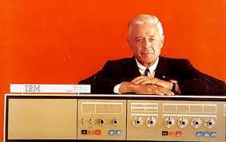

IBM Founder Thomas J. Watson Sr
Introduction
Thomas J. Watson, Sr.(February 17, 1874 – June 19, 1956), is one of those figures in the history of computing whose contributions are by no means technological but without whom the technologists would not have been able to proceed. After his somewhat controversial stint as general manager with the National Cash Register Corp., and the subsequent growth of IBM out of the Computing-Tabulating-Recording Corporation, Watson set the stage for the introduction of the computer in the corporation. National Archives, Washington, D.C. American industrialist Thomas J. Watson, Sr., built the International Business Machines Corporation into the largest manufacturer of electric typewriters and data-processing equipment in the world. In 1914 Watson became president of the Computing-Tabulating-Recording Company, a maker of electrical punch-card computing systems and other products; the company changed its name to International Business Machines Corporation in 1924. Although Columbia University had been influential in its promotion of mechanical computing systems in the T.J. Watson Astronomical Computing Bureau, IBM had never taken advantage of this expertise to move into the computer business. Subsequently IBM constructed the Selective Sequence Electronic Computer machine, installed it in its headquarters on Madison Avenue, New York, and opened a service bureau to provide computing utilities to the public. Watson, Sr., has been labeled as having been reluctant to depart from the business that had stood him in good stead for almost 40 years and to commit the corporation to build electronic computers. Watson aggressively pursued international trade in the 1930s and '40s, extending IBM's virtual monopoly of the business machines industry worldwide. Watson had contributed the environment within which the commercialization and marketing of the computer constituted a profitable venture. Thomas J. Watson was a pioneer in the development of accounting and computing equipment used today by business, government, science and industry. He built a worldwide industry during his 42 years at IBM. Mr.Watson was named chairman in September 1949. A month before his death on June 19, 1956, Mr. Watson handed over the reins of the company to his eldest son, Thomas J. Watson, Jr. Another son, Arthur K. Watson, served as president of IBM World Trade Corp., the company's international operations.
Image
Data
- Place of Birth – Campbell, New York, United States
- Date of Birth – February 17, 1874
- President of International Business Machines (IBM) 1914–1956
- Date of Demise – June 19, 1956
| Name | Date of Birth | Place of Birth | Famous attribution | Professions | Achievement | Date of Demise |
|---|---|---|---|---|---|---|
| Thomas J. Watson, Sr | February 17, 1874 | Campbell, New York, United States | I think there is a world market for maybe five computers. | Businessperson, Entrepreneur, Computer Scientist | Built the International Business Machines Corporation (IBM) into the largest manufacturer of electric typewriters and data-processing equipment in the world. | June 19, 1956 |